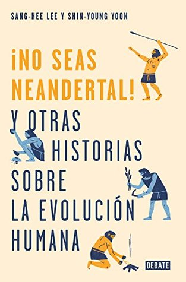

¡No seas neandertal! (y otras historias sobre la evolución humana)
Reseña por Jorge I. Zuluaga

Ver reseña en GoodReads (necesita cuenta)
Este entretenido libro presenta una visión panorámica del estado presente (¡actualizado a 2018!) del conocimiento sobre la evolución humana. Lo hace a través de 22 ensayos cortos, bien escritos, extremadamente informativos y actualizados. Adicionalmente el libro contiene cuatro capítulos finales (2 epílogos y 2 apéndices) - no dejen de leerlos - con una clarísima síntesis de la teoría de la evolución y un resumen genial de la historia de nuestra especie según los datos más recientes.
Para animarlos a hacer la inversión y leer sin demoras el libro (antes que algún descubrimiento paleoantropologico nuevo haga obsoletos algunos capítulos, esta ciencia va muy rápido) les enumero aquí los ensayos de los que se componen acompañados por una o dos frases con la idea más interesante del ensayo.
No tomen esta lista como “spoilers” o un resumen del libro, sino más bien como información que nunca encontrarán en una tabla de contenido y que los animara a adentrarse sin demora en su lectura.
1 ) Somos Canibales. No, es un mito.
2 ) El nacimiento de la paternidad. Los hombres humanos somos muy pequeños y tenemos las pelotas muy chiquitas.
3 ) ¿Quiénes fueron nuestros primeros ancestros homininos? No se sabe exactamente, pero el Homo Erectus es el mejor candidato.
4 ) Los bebés con cerebros grandes causan un gran dolor a las madres. Las mujeres la han pasado muy mal en la historia de nuestra especie.
5 ) Nos gusta la carne. No tenemos opción, el cerebro está hecho de grasa y consume mucha energía.
6 ) ¿Tienes leche? La capacidad de digerir la leche en adultos humanos (no de todos) es una muestra de que la evolución humana no se ha detenido.
7 ) Un gen para Blanca Nieves. Los primeros europeos seguramente eran morenitos.
8 ) La abuelita es una artista. El surgimiento de los abuelos coincide con el surgimiento del arte y la cultura.
9 ) ¿Aportó prosperidad la agricultura? No. Solo aumento la población y de allí nos hizo migrar.
10 ) El hombre de Pekín y la Yakuza. Los huesos del hombre de Pekín se perdieron.
11 ) Asia cuestiona el papel de Africa como lugar de origen de la humanidad. Se han encontrado homininos muy antiguos en Asia y eso no es consistente con la idea que todos migraron desde Africa.
12 ) La Cooperacion nos conecta a ti y a mi. Somos muy débiles para sobrevivir sin la cooperación.
13 ) King Kong. Había Gorilas gigantes por culpa del depredador más terrible en la historia de la vida: el hombre.
14 ) Vuelta atrás. Nuestra especie es lo que es no por el cerebro sino por el bipedismo.
15 ) En busca de la cara más humana. No todas las reconstrucciones de los cráneos antiguos han sido precisas.
16 ) Nuestro cerebro cambiante. El cerebro de los primeros humanos era un poco más grande que el de un bebé.
17 ) ¡Eres un Neandertal! Hablamos gracias al romance con Neandertales.
18 ) El reloj molecular no está en hora. No sabemos muy bien que tan antiguo es Homo sapiens.
19 ) ¿Son los denisovanos los neandertales asiáticos? Hace 30,000 años convivían 3 especies de homo incluyéndonos.
20 ) Hobbits. Los hombres de flores son muy pequeños para ser humanos y muy buenos navegantes para ser Austrolupithecus.
21 ) Siete mil millones de humanos, ¿única raza? La raza es un tema complejo, pero es seguro que no hay especies ni subespecies humanas diferentes.
22 ) ¿Siguen evolucionando los humanos? Si, aunque la evolución es lenta, el crecimiento de la población humana podría haber hecho más rápida la evolución.
¡A leerrrr!